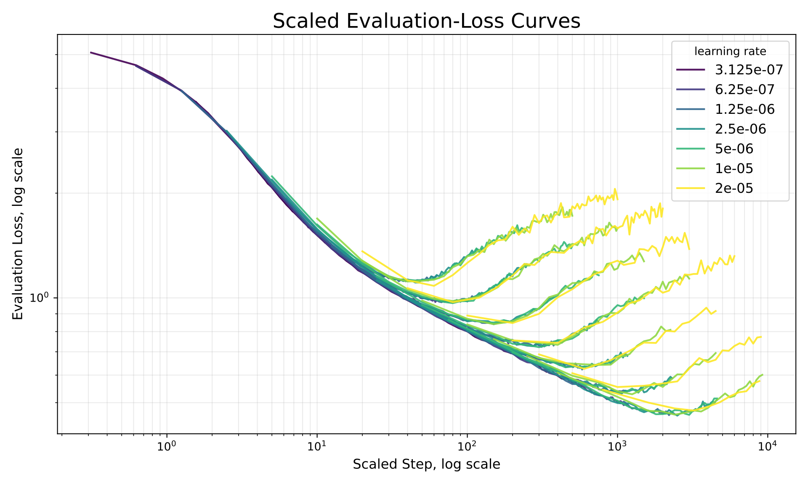
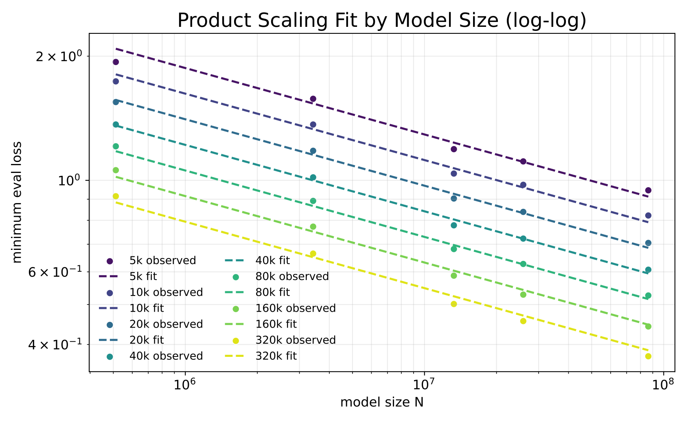
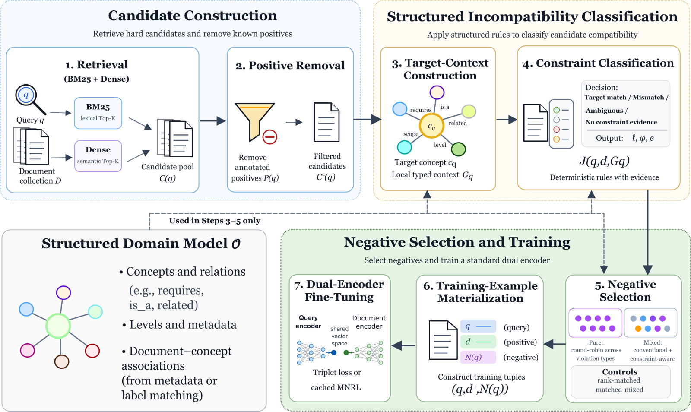
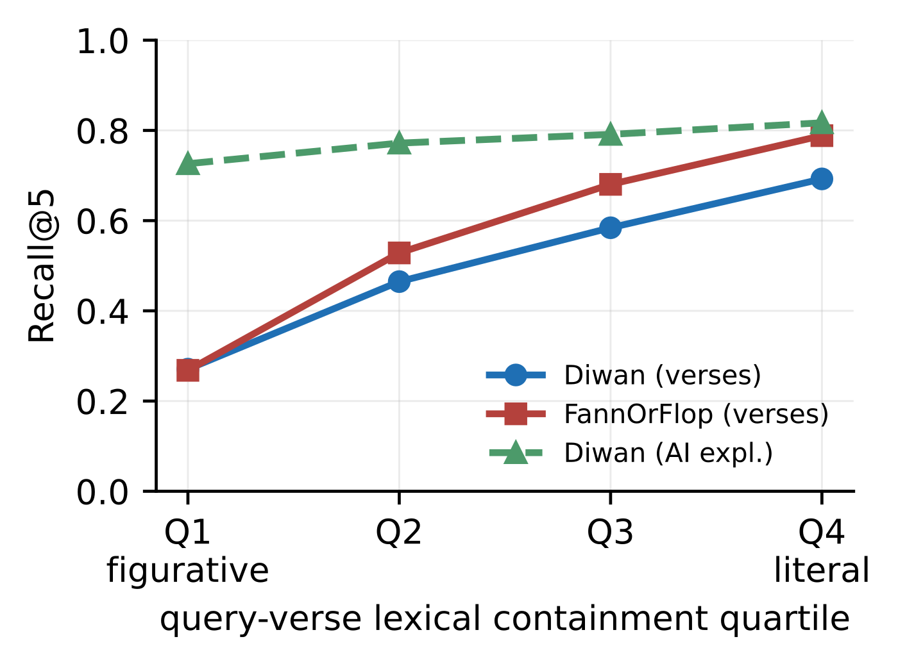
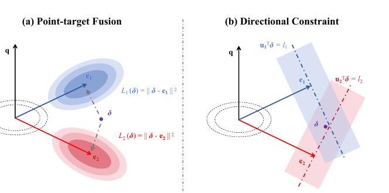

Contents · 9 sections
1What it measures2The learning rate barely moves the minimum3A multiplicative power law fits best4Lower loss really means better retrieval5Where to spend the same compute6Weight decay lowers MAEL further7Where I think it falls short8How a retrieval team could use it9VerdictSHARE
When labeled data is limited, how good a retriever can get follows a law you can compute ahead of time. The authors call the lowest evaluation loss over a whole training run MAEL (minimum achievable evaluation loss) and use it to measure the ceiling of a given model size and data size. After fine-tuning 35 BERT-family retrievers on MS MARCO subsets of different sizes, they find that MAEL is fitted accurately by a power law that multiplies parameter count and unique samples, better than the usual additive form. On BERT-Medium, the learning rate mainly changes how fast the minimum is reached, not how low it goes. By the fitted law, each time fine-tuning compute grows by the same multiple, a larger pretrained model cuts the loss by a proportion about 1.46 times that of adding more in-domain data. Within these experiments and counting only fine-tuning compute, a bigger model is the better buy when labels are limited.
This is worth reading for teams that fine-tune their own retrievers. For the choice between a bigger pretrained model and more labels, it gives formulas you can compute with. Keep in mind that every result comes from BERT-family models on MS MARCO, and the largest model is BERT-Base.
What it measures
The question is: for a given model size and number of unique labeled samples, how good can that combination get?
With few labels, the same data is trained on for many epochs. The evaluation loss first falls, then rises; the rising part is overfitting. The authors call the lowest point of the evaluation loss over the whole run MAEL (minimum achievable evaluation loss). The retrievers here encode queries and passages into separate vectors and score them by vector similarity. The training objective is the InfoNCE contrastive loss, with 256 randomly sampled negative passages for each correct query-passage pair. During training, the authors periodically compute this loss on fixed evaluation data shared by all experiments; this is the evaluation loss.
MAEL is not part of the training objective. It decides which checkpoint is kept: each run keeps the checkpoint with the lowest evaluation loss, which amounts to early stopping. Later, weight decay is also chosen as the value that gives the lowest MAEL.
The learning rate barely moves the minimum
If the minimum changed with the learning rate, MAEL could not be treated as a property of the combination itself. The authors tried several learning rates on BERT-Medium, with data from 5K to 320K samples.
The learning rate changes how many steps it takes to reach the minimum, not how low the minimum is. The step count is multiplied by the learning rate and divided by the largest learning rate, 2×10⁻⁵, to form a new x-axis. On that axis, the evaluation-loss curves for different learning rates almost overlap. For the same data budget, the standard deviation of MAEL across the five learning rates that reach the minimum during training is only 0.008 on average. For comparison, changing the data budget on the same BERT-Medium moves MAEL by 0.656. The authors also compared the checkpoints that reach MAEL under different learning rates on 1,024 query-passage pairs. CKA (representation similarity, how alike the vectors of two models are for the same inputs) is close to 1.

A multiplicative power law fits best
The main experiment is a 5×7 grid: 5 models (BERT-Tiny, Mini, Small, Medium and Base) and 7 data budgets from 5K to 320K unique query-passage pairs, 35 combinations in total. Unique samples count how many different labeled pairs the training set has; a pair seen many times counts once. Parameter count excludes the embedding parameters. All of them use the same training setup; only the learning rate is halved step by step as the model grows.

On log-log axes, MAEL is close to a straight line in both model size and data size, and the lines for different data budgets are roughly parallel. Parallel means that more data shifts the whole line down without changing its slope. That is exactly what the multiplicative form describes: MAEL equals a constant times a negative power of the parameter count times a negative power of the data size.
The authors compare it with two common additive forms. An additive form assumes that a too-small model and too little data each add their own share of loss, independently. The multiplicative form fits best:
| Form | R² | RMSE |
|---|---|---|
| Multiplicative | 0.99 | 0.035 |
| Chinchilla-style additive | 0.96 | 0.076 |
| Kaplan-style | 0.88 | 0.133 |
A good fit is not the same as good prediction, so the authors also hold data out. They remove all points of one model size, or all points of one data budget, fit on the rest, and predict the removed points. The mean relative error of these predictions is between 2.77% and 3.28%, and the worst single point is off by close to 10%. Fitting only on the small models with at most 80K samples and predicting the 4 largest points, BERT-Medium and BERT-Base with 160K and 320K samples, gives a mean relative error of 4.45%.
Lower loss really means better retrieval
A lower MAEL does not automatically mean better retrieval, so the authors check directly. For each of the 35 combinations they take the checkpoint that reaches MAEL and measure retrieval on the MS MARCO validation set. The Pearson correlation between MAEL and MRR@10, Recall@100, nDCG@10 and MAP@10 is between -0.985 and -0.995. The rank-based Spearman correlation is about -0.996. So ordering the combinations by MAEL gives almost the same order as ordering them by retrieval metrics.
Where to spend the same compute
To compare spending options, you also need to know how many steps it takes to reach the minimum. The authors fit a second law for steps: larger models need fewer steps, and more data needs more steps. The fit gives steps roughly proportional to the parameter count to the power -0.5064 and to the data size to the power 0.9231.
Fine-tuning compute is roughly model size times steps. So compute is roughly proportional to the parameter count to the power 0.4936 and to the data size to the power 0.9231.
On the loss side, the fitted MAEL is roughly proportional to the parameter count to the power -0.161 and to the data size to the power -0.206.
Dividing the loss exponent by the compute exponent gives the efficiency of each option, meaning by what proportion the loss falls for the same multiple of extra compute. It is about 0.3262 for the model and about 0.2234 for data. The ratio is about 1.46, so spending on the model pays off more. Hoot says

All three steps use only the exponents fitted in this section; the doubling is illustrative. This example shows why the two efficiencies can be compared directly: at the same compute, the drop from a bigger model outweighs the rise from having less data. Source: the paper's fitted step law and MAEL exponents (this section); the model doubling is illustrative
The two efficiencies differ, so with total compute fixed, moving the budget toward the more efficient side keeps lowering the loss.
This also means there is no best mix in the middle. With total compute fixed, moving from "small model, more data" toward "large model, less data" changes the loss in one direction only. With the fitted values, the further you move toward the large model, the lower the loss.
The authors also run a measured comparison to check that this lean is not just an artifact of the multiplicative form. The baseline is the optimal mix computed by the additive form itself: BERT-Medium with about 41.2K samples. With roughly the same compute, they switch to BERT-Base with 21.7K samples. The runs use the closest available experimental configurations. BERT-Base used 8% more compute and reached an MAEL of 0.690, lower than the 0.720 of BERT-Medium.
Weight decay lowers MAEL further
The authors also sweep weight decay on BERT-Small. The best weight-decay coefficient changes with the data budget. But the product of learning rate, weight-decay coefficient and data size is about the same at the optimum for every data budget. So halving the data means doubling the weight-decay coefficient. The 320K budget uses a coefficient of 2; with very small learning rates the coefficient reaches the order of 100, so do not copy the usual small values. BERT-Small trained this way retrieves better than without weight decay on MS MARCO and on the average over NQ, HotpotQA and FiQA.
Where I think it falls short
The models in the experiments are small. The largest model is BERT-Base, with about 86 million non-embedding parameters. Retrievers in use today are much larger, and the paper does not test whether the law extends that far.
The training data comes from one dataset only. All fitting is on MS MARCO, and the exponents may differ in other domains.
The 1.46 figure counts only fine-tuning compute. The paper also states that the cost of pretraining the larger model is not charged to the fine-tuning budget. The serving cost is not included either. For online retrieval, a bigger model means slower and more expensive queries, and you have to add that cost yourself.
The measured comparison is a single pair, and the two sides differ by 8% in compute, so it is thin as validation.
The main experiments fix zero weight decay and one learning rate per model. The fitted law belongs to that setup; a different training setup needs a new fit.
How a retrieval team could use it
If you fine-tune your own retriever with few labels, run a few small models on small data first, record each run's minimum evaluation loss, fit a multiplicative power law, and then estimate larger configurations.
Pick checkpoints at the minimum of the evaluation loss. The learning rate does not need fine tuning, as long as training runs until the evaluation loss starts to rise. When the data size changes, adjust weight decay so that the product of learning rate, weight decay and data size stays the same.
Before deciding between a bigger model and more labels, add the serving cost to the calculation.
Verdict
The paper turns "how to spend a fine-tuning budget when data is limited" into something you can compute. The minimum evaluation loss is stable and tracks retrieval metrics closely, and a multiplicative power law predicts it well. The conclusions are credible within BERT and MS MARCO; check them again yourself before moving to large models or other domains.
How did this read for you?
Hoot made a note. Thanks for the feedback.
One tap, no sign-in; tap again to undo. Only anonymous counts are kept, never who you are.
Related papersMore from Paper Daily

Retrieval · 2026-10-28CA-HNM: Constraint-Aware Hard Negative Mining for Dense Retrieval with Structured Domain ModelsDense retrievers usually take hard negatives from top-ranked documents that are not labeled positive, but ranking high only shows a document resembles the query, not why it should be excluded. CA-HNM checks each candidate against a course knowledge graph, wrong concept, wrong scope or wrong difficulty level, and keeps only those with a clear conflict as negatives. It beats a rank-matched control…
Retrieval · 2026-10-26What the Query Remembers: Query Abstraction Governs Lexical and Dense Retrieval of Classical Arabic PoetryWhen searching a classical Arabic poetry archive, which works better: keyword search with BM25 or an embedding model? This paper finds that the answer depends mainly on how much of the original wording the user still remembers. When users half-remember a few lines, BM25 beats all nine embedding models. When users can only describe what the poem is about, BM25 drops to 8th of 10 systems. By rewrit…
Retrieval · 2026-10-23Directional Posterior Feedback Fusion for Query Reformulation in Dense RetrievalWhen rewriting a query vector with first-round retrieved documents or an LLM-written hypothetical answer (HyDE), the usual approach averages feedback vectors and interpolates with the original query. DIFF argues that each piece of feedback only supports correcting the query along one direction, so other directions should not be pulled back by it: it subtracts the component parallel to the origina…
Discussion
Add experiment details, reproduction notes or a different take. Requires a GitHub sign-in.
Loading the discussion…